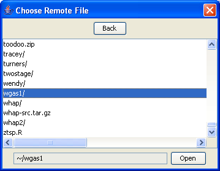

|  |
Setting the remote project folderNow select the remote project folder: this dialog will appear that lists all the files and folders on the remote machine. Navigate to the folder which contains the genotype and phenotype data and then click Open. In this case we select the folder that also happens to be called wgas1 although, remember this is a different folder from the local one, on a different machine.Previous | Next |